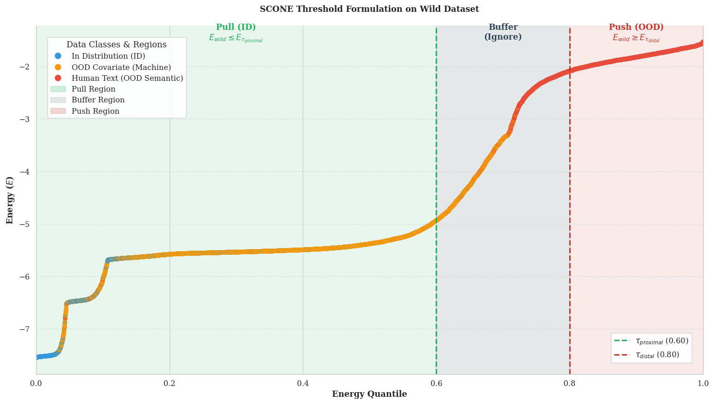

Abstract
AI-generated text is increasingly difficult to distinguish from human writing, creating risks in academic integrity, medical misinformation, and social media disinformation. While recent work has reframed MGT detection as an out-of-distribution problem with strong in-distribution and zero-shot results, generalization to LLMs unseen during training remains underexplored.
We propose INSCONE (Informed SCONE), which adapts the SCONE wild-data framework to the text domain by exploiting curated wild data with known mixing proportions (πid, πc, πs) to stabilize the energy geometry around seen and unseen LLM families. INSCONE achieves a 6.1-point FPR95 improvement over a competitive baseline on the RAID benchmark. We additionally release RAID+, an extended evaluation set regenerating RAID prompts with contemporary frontier models.
Code and data: github.com/markstanl/INSCONE · huggingface.co/datasets/markstanl/RAID-Plus
Key Insight
Standard SCONE uniformly pushes all wild samples toward high energy. This is a reasonable assumption in vision where covariate shift is pixel-level. In text, covariate shift means an entirely different model family. The push term overwhelms the Lipschitz drag and incorrectly drives unseen LLM embeddings toward the human text region.
Proximal anchor
Wild samples below the quantile threshold τprox are estimated as covariate OOD and pulled toward low energy, anchoring unseen LLMs near the ID region.
Distal anchor
Wild samples above τdist are estimated as semantic OOD (human text) and pushed toward high energy. A buffer δ around the boundary receives no gradient.
Method
Energy-Based Baseline
We build on HTAO's energy-based detector, which uses a frozen SimCSE-RoBERTa encoder to map text into an embedding space where LLM-generated text clusters tightly at low energy and human text diffuses toward high energy. A lightweight classification head over known LLM families sharpens this geometry during training.
INSCONE Wild Loss
INSCONE instead utilizes the known composition of the wild batch to split samples into two groups: those likely to be machine-generated (pulled toward low energy) and those likely to be human (pushed toward high energy). A small tunable buffer around the boundary receives no gradient, preventing noisy updates from ambiguous samples.

Empirical wild batch energy distribution. Wild ratios set to 10% ID, 60% OOD Covariate, and 30% OOD Semantic. Green = proximal (covariate) region anchored at low energy; red = distal (human) region pushed high; gray = buffer receiving no gradient. ~99.2% of proximal samples are machine text; ~99.6% of distal samples are human.
Proximal region
The lowest-energy wild samples are estimated as covariate OOD (unseen LLMs) and pulled toward the ID energy region.
Distal region
The highest-energy wild samples are estimated as human text and pushed further toward high energy.
Dead zone
Samples near the composition boundary receive no gradient — preventing spurious updates from ambiguous wild samples.
Results
Evaluated on RAID temporal split.
| Method | AUROC ↑ | Wild FPR95 ↓ | Zero-Shot FPR95 ↓ |
|---|---|---|---|
| Standard SCONE | 0.9298 | 0.4702 | 0.4486 |
| Fair Ablation (20k labeled) | 0.9371 | 0.1552 | 0.3166 |
| Baseline (10k) | 0.9520 | 0.1646 | 0.2862 |
| INSCONE (ours) | 0.9506 | 0.1764 | 0.2252 |
INSCONE achieves the best zero-shot FPR95, improving 6.1 points over the naive baseline and 20.3 points over standard SCONE, at near-identical AUROC.
RAID+ Dataset
We regenerate RAID prompts using frontier models absent from the original benchmark, providing an evaluation set for testing detector behavior against unseen contemporary LLMs not present in any existing MGT benchmark.
| Model | Samples |
|---|---|
| Gemini-3.1-Pro | 2,000 |
| DeepSeek-V3 | 2,000 |
| Gemma-3-27B | 2,000 |
| LLaMA-3.3-70B | 2,000 |
| Total | 8,000 |
Available on 🤗 at markstanl/RAID-Plus.
BibTeX
@misc{stanley2025inscone,
title = {INSCONE: Unknown-Aware Detection of LLM-Generated Text
via Informed Wild Data},
author = {Stanley, Mark and Abboud, Masa and Khan, Fairoz and
Khatoon, Saira and Syed, Samad},
year = {2025},
url = {https://github.com/markstanl/INSCONE}
}